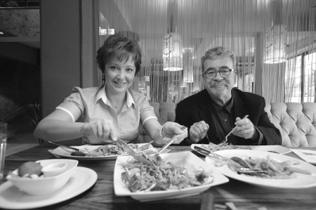

“Kokoreç kokusunu duyunca kendimi tutamıyorum”
Çocukken yemekle aranız nasıldı?
Biz İzmirliyiz. Annem tarafından Selanik yani suyun öte tarafındanız. Evimizin mutfağında tamamen Ege mutfağı hâkimdi. Babam subay olduğu için askeri disiplin vardı evimizde. Onun için masada önümüze ne konursa yemek zorundaydık. “Ah evladım, canın ne çekti, ne istersin” gibi bir şey yoktu. Hatta babam saat kurardı, “Bu kadar dakikada bitecek” derdi. Benim hayatım zeytinyağı üzerine kuruludur. Zeytinyağı en sevdiğim şeydir ve benim için çok özeldir. Biz her türlü otu yerdik. Çocukken insan çok bayılmıyor otlara. Bütün çocuklar gibi makarna, pilav, köfte yemek isterdim, ama ota da alıştım. Ailem deniz mahsullerini de çok severdi. Ben hiçbir zaman çok sevmedim. 30 yaşına kadar balık yemedim. Sonra hamilelikle birlikte, “Çocuğun zekâsı için lazım” dediler, ilaç niyetine yemeye başladım. Şimdi balığı seviyorum.
Çocukluğunuzun mutfağından aklınızda neler kaldı?
İzmir deyince aklıma hemen anneannem gelir. Çünkü annemle babam bir yere gittiklerinde beni hemen anneanneme postalarlardı. Anneannemin evi bahçe katıydı, teldolaplar vardı ve kalabalıktı. Çok yemek yiyen bir aileydik. Bu yemeklerin çoğu da zeytinyağlılardı. Bayramlarda ev baklavası yapılırdı, biz çocuklar yemeyelim diye yatak altlarında saklanırdı. Bu yüzden gece yarısı evin içinde çarpışmalar olurdu. Gecenin üçünde, dördünde bir taraftan dayımlar kalkar, diğer taraftan annemler, ben de kendi çapımda aradan kaçmaya çalışırdım. Hepimizin amacı o baklavaları bulup bir iki tane aşırmaktı. Eski Foça’dan kendimiz midye toplardık. Bizimkiler bunlarla midye dolması yaparlardı.
Anneniz iyi bir aşçı mıydı?
Annem çok güzel yemek yapardı ama artık yapmıyor. Çünkü mutfağı seven biri değildi. Mutfağın hâkimi anneannemdi.
O dönemin aklınızdan çıkmayan yemekleri hangileri?
Bol maydanozlu köfte, muhallebi, midye dolma ve komşumuzun yaptığı kare pasta çok güzeldi. Her ne kadar anneme o pastadan yaptırdıysam da o lezzeti bulamadım. Belki de orada yemenin tadı başkaydı; ben yemeği mekânla da birleştiririm. Mesela, nerede yersem yiyeyim, Bodrum’da yediğim balığın tadını bulamam. Buca’da halalarımızın bir köşkü vardı. Çocukluğumda köşkün cumbasında yediğim yemeğin tadını da hiç unutamam.
Kaç yaşınıza kadar annenizin yemeğini yediniz?
Uzun zaman yedim. Pırasayı kimse annem gibi yapamaz. Ben de ondan öğrendiğim gibi yapıyorum, ama asla o lezzeti tutturamıyorum. Köfteyi de hiç kimse anneannem gibi yapamaz. Rahmetli olduğu için o köftelerden mahrum kaldım. Bodrum’da komşum Nurten Abla, anneannemin köftesine yakın lezzeti tutturuyor. Ona rica ediyorum, gidip onlarda yiyorum.
Sizin mutfakla aranız nasıl?
Mutfakla geç tanıştım ama şimdi iyi. Çok becerikli miyim? Hayır. Çok hızlı yapar mıyım? Hayır. Titiz bir insanım, dolayısıyla aynı anda beş iş yapamıyorum. Onun için misafir çağırdığım zaman iki günüm mutfakta geçiyor. Bir saatte dört çeşit yemek yapan arkadaşlarıma çok özeniyorum. Yapacağım yemeklerin her şeyini kendim alırım, yavaş yavaş hazırlarım, güzel olsun diye özenirim. Evime gelenlerin damaklarının şenlenmesini isterim. Arkadaşlarıma tarif vereceğim zaman, “Yok gelip sende yiyeceğiz” diyorlar. Bu benim için çok büyük bir iltifat. Bu şekilde yemek yapmak keyifli, ama her gün yemek yapıyor olmak bir kadın için zulüm. “Bugün ne pişireceğim?” diye düşünmek, çok sıkıcı geliyor bana.

Eşinizin mutfakla arası nasıl?
O iyi yemek yer ama yapmakla pek alakası olmadı. Fakat son dönemde bir merak geldi ona da. Maalesef ortalığı çok dağıtıyor. Geçenlerde, “Size tavuklu makarna yapayım” dedi. İçine sebze filan koymuş, gerçekten çok güzel olmuştu. Benim merakım onu da körükledi. Çok sık olmamakla birlikte, eşim mutfağa girdiğinde çok güzel şeyler yapıyor. İlk önceleri ne varsa tencerenin içine atıyor ve çok güzel olacağını düşünüyordu. Ben o kadar karışığı hiç sevmem, tatlar belirgin olmalı, mesela türlüden nefret ederim.
Çocuğunuz iştahlı mı?
Bizim aileden iştahsız insan çıkar mı? Mantıyı çok seviyor, ama en çok kuru patlıcan dolmasına taklalar atıyor. Fakat benim usul olacak. İçinin yarısı bulgur yarısı pirinç, baharatı falan bol... O da acıyı çok seviyor.
Buzdolabınızın olmazsa olmazı nedir?
Yoğurt. Çok severim, kızım da çok sever; her sofrada mutlaka olur. Buzdolabında değil ama kimyon, pulbiber ve zeytinyağı mutfaktan hiç eksik olmaz. Bir de dereotu, nane mutlaka olur.
Pazara gidiyor musunuz? Gidiyorsanız meşhur olmanın avantajlarını yaşıyor musunuz?
Giderim. Çünkü pazarlarda çok güzel şeyler oluyor, hem de çok ucuz. Ben pazarın “Berna Abla”sıyım zaten. Evde derin dondurucum var, onun içine Bodrum pazarından aldığım enginarı, barbunyayı, bezelyeyi, fasulyeyi doldururum. Yazın reçelimi kendim yaparım, güneşte pişiririm. Diğer reçellerde hiç iddialı değilim ama vişne reçelinde kimse elime su dökemez. Sakızlı, tarçınlı yaparım.
Eşinizle yemek konusunda uyuşuyor musunuz?
Eşim tavuk etini çok sever. Bana çok da gerekli gelmiyor. Bu yüzden tavuğu lezzetlendirmenin yollarını buldum. Soyayla, balla ve portakal suyuyla bir sos hazırlayıp üstüne döküyorum ve fırına veriyorum, çok lezzetli oluyor. Ben kıymayı severim, tavuk yerine kırmızı eti tercih ederim. Zeytinyağlıları ikimiz de severiz. Zeytinyağlı bir şeyler olmadığı zaman, yemek yediğimi anlamam. Kuzu etini de severim. Kuzu kapama yaparım. Çok sık et yemem, ama yiyeceksem oturup hakkını veririm.
Kızınızın ünlü bir aşçı olmasını arzu eder misiniz?
Çok iyi yemek yapsın isterim. Aşçılık okumak istediğini söylese, bayılarak kabul ederdim ve hemen okul araştırırdım. Ama şuna eminim ki okuluna gitmese de kızım çok iyi bir aşçı olacak.
Lezzetli yemek yapan erkekler sizi etkiler mi ya da etkiler miydi?
Etkiler tabii. İllaki bir aşk yaşanması gerekmiyor; erkek iyi yemek yapıyorsa tabii ki artı puan... Mesela Emre Kınay çok güzel yemek yapar. Sık sık arayıp, “Küçük tüpü balkona çıkarttım, balık yapıyorum, gelsenize” der; toplanıp gideriz.
Sokak yemekleriyle aranız nasıl?
Uğur Dündar duymasın ama çok severim. Nohutlu pilav, köfte-ekmek, kokoreç falan hepsini yerim, çok da severim. Uğur Bey bana bu yemeklerin sağlıksız olduğunu çok anlattı. Ama kokusunu duyduğum zaman her şeyi unutuyorum. Ağzımdan sular akıyor. Kendimi tutamıyorum.
Favori restoranlarınız?
Erenköy’deki Cafe Cadde’nin lezzetleri çok rafinedir. Mikla, gerçekten harika bir yer ama miktarlar doyumluk değil, çok aç gitmeyeceksiniz oraya. Orada yediğiniz yemeği hemen yutmayıp, ağzınızda bir iki dakika tutacaksınız. Boğaz tarafında oturduğumuz için, Boğaz’daki balıkçıların ayrı bir tadı oluyor, onları seviyorum. Günaydın Et Lokantası’nı da beğeniyorum. Bodrum Yalıkavak’taki Çakıroğlu’nun, yaptığı kalamarı kimse yapamaz. Bodrum’daki Sait’e ise mevsiminde barbun yemeye gitmek gerekir.
Hamileyken aldığınız kilolardan nasıl kurtuldunuz?
Yedi buçuk aylık hamileyken dört kilo almıştım, gazeteler benim dar pantolonlarla fotoğraflarımı basıyorlardı. Çok havalıydım, ancak son 40 günde 10 kilo daha alınca bütün havam gitti. 18 kiloyla doğuma girdim; 8’i gitti, 10’u bende kaldı. Doğumdan yeni çıkmışım, yorgunum, çocuk için sabahlara kadar kalk falan, bir türlü kilo veremiyorum. Rahmetli Üstün Korugan’a gittim. “Kendini bu kadar kasma, yediğini biraz daha azaltarak ye” dedi. Dediğini yaptım, her şeyi az az yedim. Her ay bir kilo vererek bu süreci atlattım.
Bir günde nasıl besleniyorsunuz?
Eskiden hiç kahvaltı etmezdim, çünkü ağır bir tempoda çalışıyordum. Şimdi iki-üç saat kahvaltı yapıyorum. Kahvaltıda peynir, zeytin, çavdar ekmeği yerim. Masada İzmir tulumu, küçük güzel salkım domates, yine İzmir’de özel yaptırttığım zeytinlerim ve reçelim, iyiyse kaymak bulunur. Jambon, sosis, sucuk gibi şeyleri pek yemem. Öğlenleri evde ne varsa atıştırırım. Akşam mutlaka ailece bir araya geliriz. Adam gibi sofra kurulur. Önden zeytinyağlılar, sonra ana yemek yenir.
(19 Aralık 2010)
| BERNA LAÇİN'DEN BOL SOĞANLI HAMSİ FIRIN TARİFİ Soğan piyazlık ince ince doğranır; kimyon, kırmızıbiber ve sumakla bir güzel öldürülür, tepsinin dibine yayılır. Ayıklanmış hamsiler, açık olan kısmı üste gelecek şekilde soğanın üzerine dizilir. Sonra limon sıkıp zeytinyağı gezdirilir. İsteğe göre baharatı ve tuzu ilave edilir ve ocağa konur. Buğulama gibi pişirilir. Servis etmeden 15 dakika önce fırının ızgarasında üstü nar gibi kızartılır. |